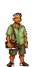
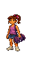
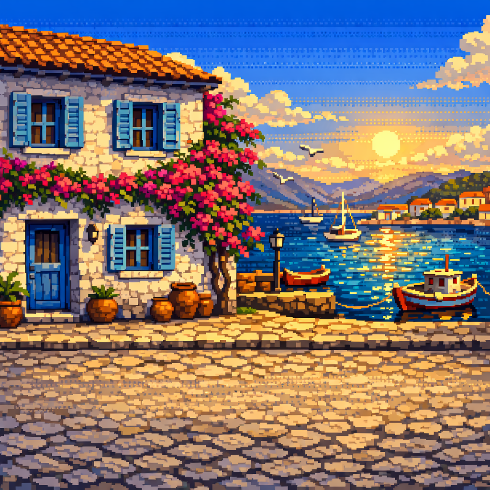
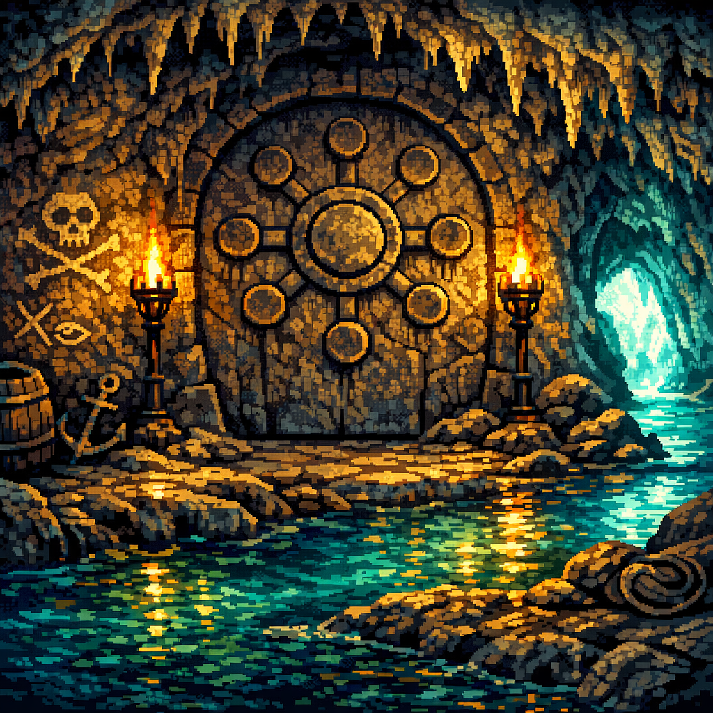
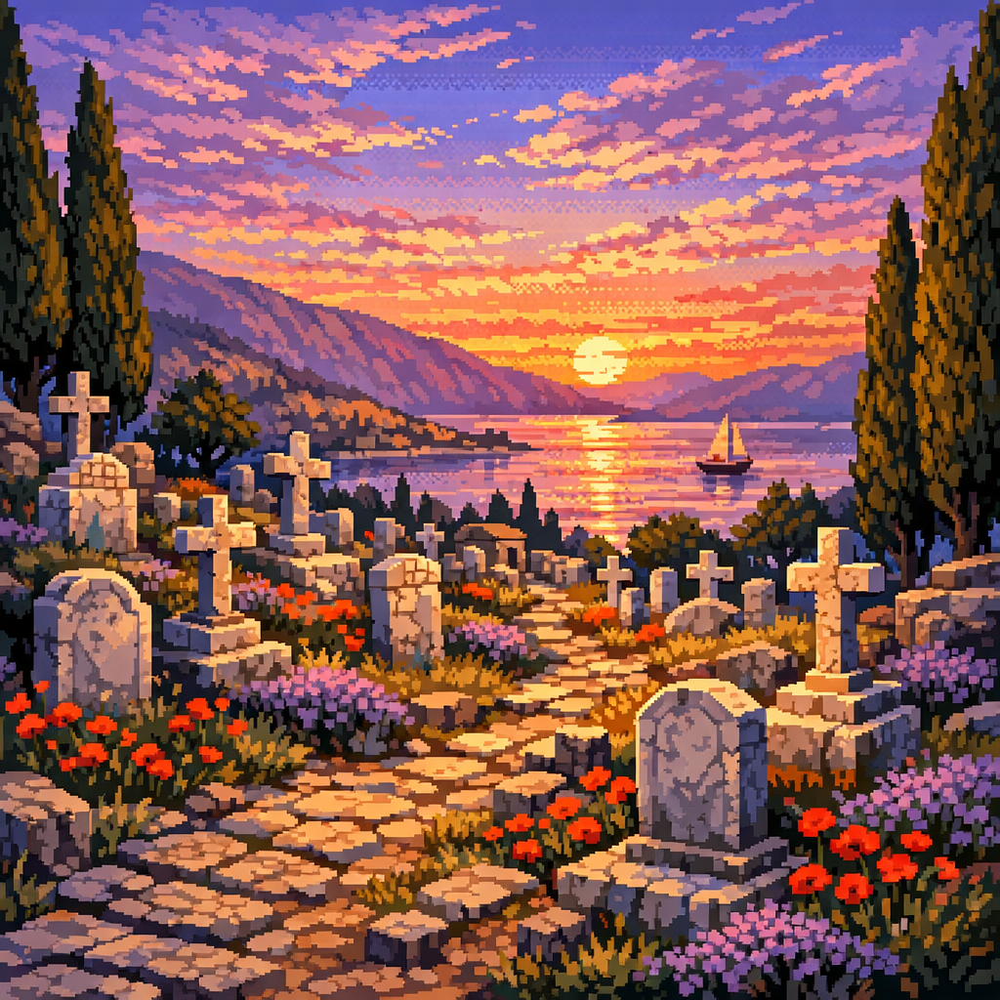
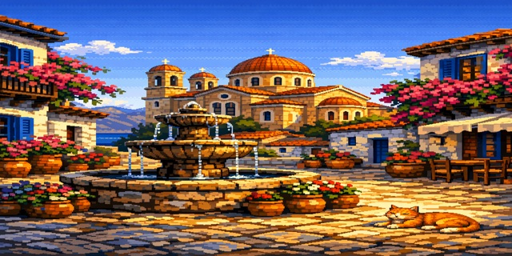

Το Μυστήριο του Γαλαξειδίου
The Mystery of Galaxidi
8 σκηνές. Ένας θησαυρός. Μια πράσινη πέτρα. Ένα φάντασμα που θυμάται.
8 scenes. One treasure. One green stone. One ghost who remembers.


ΝΤΕΜΗΣ


ΚΛΕΙΩ
↓ Scroll to begin ↓
Σκηνή 1 / Scene 1
ΑΦΙΞΗ
"Arrival"
Εικόνα / Visual

The crescent harbor at golden hour. Stone houses climbing the hill, blue shutters, bougainvillea. Oversized bollards holding tiny fishing boats. A cat watches from a doorstep. The family walks in from the left.
The family arrives at Galaxidi by car. Late afternoon, the light turning everything to honey. The town stretches along its crescent harbor — beautiful, quiet, full of ghosts it doesn't know about yet.
ΝΤΕΜΗΣ
Φτάσαμε. Πρέπει να βρούμε το σπίτι του παππού.
ΑΙΑΣ
Ποιου παππού;
ΝΤΕΜΗΣ
Του παππού μου. Κανένας δεν έχει μπει εδώ χρόνια. Κληρονομιά.
ΚΛΕΙΩ
Θα έχει φαντάσματα;
ΝΤΕΜΗΣ
...Όχι, Κλειώ. Θα έχει σκόνη.
They walk through the harbor. A fisherman nods. A cat follows Clio — it will follow her for the entire game. They find the house on a narrow lane climbing from the port. Old stone, blue door, bougainvillea choking the balcony. The key barely turns.
The door opens. Dust and memory pour out.
Gameplay
- Tutorial: learn to click, walk, look at objects
- Explore harbor (2-3 interactive objects — bollards, boats, cat)
- Walk to grandfather's house → exit to Scene 2
- Cat follows Clio (running gag throughout game)
Music
Warm acoustic guitar. The main theme, simple and solo. Cicadas in the mix. Mediterranean afternoon warmth.
· · ·
Σκηνή 2 / Scene 2
ΤΟ ΣΠΙΤΙ ΤΟΥ ΠΑΠΠΟΥ
"The Grandfather's House"
Εικόνα / Visual

Dark interior, shutters closed. As each shutter opens, golden light floods in to reveal: model ships on shelves, nautical instruments on walls, a faded photograph of Captain Visvikis. A captain's house frozen in 1903.
Ntemis opens shutters one by one. Light floods in. It's a captain's house — model ships, brass instruments, charts on walls. A faded photograph: a man in captain's dress, standing proud on a ship deck.
ΚΛΕΙΩ
Ποιος είναι αυτός;
ΝΤΕΜΗΣ
Ο Καπετάν Βισβίκης. Ο προπάππους μου. Ταξίδεψε σε όλο τον κόσμο με ιστιοφόρο.
Ajax finds a locked desk drawer. Clio finds the key — in a copper pot on the mantle, exactly where a seven-year-old would look. Inside the drawer: a letter. Old paper, careful handwriting, sealed with wax.
Σε όποιον βρει αυτό το γράμμα — εγώ, Καπετάν Δημήτρης Βισβίκης, αφήνω πίσω μου τον θησαυρό μιας ζωής στη θάλασσα. Δεν τον δίνω σε κανέναν. Τον δίνω μόνο σε αυτόν που θα βρει την πράσινη πέτρα.
Την πέτρα τη βρήκα στα ταξίδια μου στην Ανατολή. Την έκρυψα εκεί που η γη μιλάει — εκεί που τα βράχια γίνονται σπήλαιο κι ο ήχος δεν φεύγει ποτέ.
Βρες την πέτρα. Φέρε τη σε μένα. Θα σου δείξω τον δρόμο.
— Καπ. Δ. Βισβίκης, 1887
ΑΙΑΣ
"Φέρε τη σε μένα"... Είναι νεκρός εδώ και εκατό χρόνια. Πώς θα του τη φέρουμε;
ΚΛΕΙΩ
Στο νεκροταφείο, βλάκα.
ΝΤΕΜΗΣ
...Κλειώ.
ΚΛΕΙΩ
Τι; Λογικό είναι.
Ajax looks at the letter again: "εκεί που η γη μιλάει — εκεί που τα βράχια γίνονται σπήλαιο." A cave. They need to find a cave. But first — someone in town might know.
+ Γράμμα Βισβίκη
+ Φωτογραφία Καπετάνιου
Gameplay
- Open shutters one by one (light reveals room gradually)
- Examine photo, model ships, instruments
- Find locked drawer → find key in copper pot → open drawer
- Read letter → quest begins
- Letter + photo go into inventory
Music
Mysterious piano. Soft, dust-in-sunbeams. Swells when the letter is read — the adventure theme enters for the first time.
· · ·
Σκηνή 3 / Scene 3
ΤΟ ΛΙΜΑΝΙ
"Asking Around"
Εικόνα / Visual

The harbor in early evening warmth. Taverna lights coming on. Fishermen pulling nets. Cats on bollards. Stavros, old and weathered, sits by the quay mending nets.
They show the letter around. Most people shrug. One old woman crosses herself. A taverna owner laughs: "Βισβίκης! Ο τρελός καπετάνιος!" But Σταύρος, mending nets by the quay, goes very still when he sees the name.
ΣΤΑΥΡΟΣ
Βισβίκης... Ο Δημήτρης. Ο παππούς μου μιλούσε γι' αυτόν. Ταξίδεψε στη Σμύρνη, στην Αλεξάνδρεια, στη Βηρυτό. Λέγανε ότι γύρισε με κάτι... κάτι πράσινο. Δεν το έδειξε ποτέ σε κανέναν.
ΝΤΕΜΗΣ
Ξέρεις πού μπορεί να το έκρυψε;
ΣΤΑΥΡΟΣ
"Εκεί που η γη μιλάει"... Υπάρχει μόνο ένα μέρος. Ο Κάρκαρος. Το σπήλαιο πίσω από την πλατεία Μάμα. Μπαίνεις μέσα και η φωνή σου γυρίζει πίσω τρεις φορές. Η γη μιλάει, λένε.
He leans closer, his voice dropping:
ΣΤΑΥΡΟΣ
Αλλά πρόσεξε. Ο Βισβίκης δεν ήταν απλός καπετάνιος. Ήταν ο τελευταίος που πίστευε ότι το Γαλαξίδι μπορούσε να ξαναγίνει μεγάλο. Οι άλλοι τα παράτησαν. Αυτός όχι. Ό,τι κι αν έκρυψε... το έκρυψε για κάποιον λόγο.
ΚΛΕΙΩ
(to the cat following her)
Ξέρεις εσύ πού είναι η σπηλιά;
The cat walks toward Plateia Mama. Clio follows.
Gameplay
- Show letter to 2-3 NPCs (comic/dismissive responses)
- Find Stavros — main dialog tree with history
- Stavros reveals: "Karkaros" cave behind Plateia Mama
- Cat leads toward cave exit
Music
Bouzouki, lively harbor warmth. Shifts subtler, lower when Stavros speaks about Visvikis. The mystery deepens in the music.
· · ·
Σκηνή 4 / Scene 4
ΤΟ ΣΠΗΛΑΙΟ
"The Cave of Karkaros"
Εικόνα / Visual

Dark cave interior. Phone flashlight casting long shadows. Dripping water. Ancient markings scratched into stone walls — ship names, captain initials, dates. Deep in the chamber, a crack in the wall glows faintly green.
Plateia Mama. Small, overlooked. Behind old crates and overgrown bushes: the cave entrance. The tunnel carved in 1940, leading into the natural chamber of Karkaros.
Inside: dripping water, echo, darkness. Ntemis uses his phone flashlight. The walls are covered in old marks — ship names, initials, dates scratched into stone over centuries. Captain marks. History written by hand in rock.
ΑΙΑΣ
Μπαμπά, κοίτα — ο Βισβίκης ήταν εδώ. "Δ.Β. 1887."
They search. Ntemis looks at ground level. Ajax checks crevices at his height. Nothing. Then Clio, looking up at the angle only a seven-year-old would — she sees it. Wedged into a crack in the wall above eye level, catching the phone light in a way that makes it seem almost alive.
THE GREEN STONE. Smooth, dark green, roughly the size of a fist. It catches light in a strange way — almost glowing. It's warm to the touch.
ΝΤΕΜΗΣ
Σμαράγδι; Όχι... νεφρίτης. Jade. Από την Ανατολή, σίγουρα.
ΑΙΑΣ
Αξίζει κάτι;
ΝΤΕΜΗΣ
Αξίζει ό,τι ο Βισβίκης ήθελε να δείξει μ' αυτό. Τώρα πρέπει... να του το πάμε.
ΚΛΕΙΩ
Σας το είπα.
ΑΙΑΣ
...Στο νεκροταφείο.
ΚΛΕΙΩ
Σας. Το. Είπα.
+ Πράσινη Πέτρα (Jade)
Gameplay
- Enter cave — atmospheric transition (light → dark)
- Examine wall markings — find "Δ.Β. 1887"
- Search for stone — try wrong spots first (ground level, crevices)
- Clio finds it (she looks UP — only she has the right angle)
- Green stone goes into inventory
Music
Underground wonder. Echoing, dripping, mysterious but warm — not scary. Resonant crystalline tone when the stone is found. The jade has its own sound.
· · ·
Σκηνή 5 / Scene 5
ΤΟ ΝΕΚΡΟΤΑΦΕΙΟ
"The Captain's Rest"
Εικόνα / Visual

Dusk. The old cemetery above town. Marble headstones with carved ships. Cypress trees. Wild thyme. The gulf visible between the trees, catching the last light. Visvikis's grave: a marble captain's headstone with a carved schooner.
The old cemetery above town. Every headstone is a biography — ships carved in marble, epitaphs about the sea. Clio reads them aloud. They find Visvikis's grave: marble headstone, carved schooner, 1841-1903.
Ntemis places the green stone on the headstone.
Silence.
Then the air changes. Not cold — different. The light shifts. Clio grabs Ntemis's hand. Ajax steps back.
The ghost of Captain Visvikis appears.
Not frightening. Weathered, proud, tired. Captain's coat, white beard, eyes that have seen every port in the Mediterranean. He looks at the stone. He looks at the family. He smiles — the smile of a man who has waited 120 years.
He doesn't speak. He gestures. He points — not at them, not at the grave. He points down the hill, toward the harbor, toward the church of Agios Nikolaos. Then he traces something in the air: a cross — but also a compass rose.
ΚΛΕΙΩ
(ψιθυριστά)
Ο χάρτης. Θέλει να βρούμε τον χάρτη. Είναι στον Άγιο Νικόλαο.
The ghost nods. He fades. The green stone glows once, then goes dark.
ΑΙΑΣ
...Μόλις μας έδωσε οδηγίες ένα φάντασμα.
ΝΤΕΜΗΣ
Μόλις μας έδωσε οδηγίες ο προπάππους μου.
Clio draws the ghost in her notebook. "Κουρασμένος αλλά χαρούμενος."
Gameplay
- Explore graveyard — read 3-4 captain headstones
- Find Visvikis's grave
- Use green stone on headstone → ghost sequence triggers
- Ghost appears, gestures, points to church → fades
- Clio interprets: the map is at Agios Nikolaos
Music
THE GHOST'S THEME. Solo Greek lyra. Starts lonely and melancholy. Warms as the ghost smiles. Goes quiet as he fades. Resolves into peace. The sound of a man who waited and was finally found.
· · ·
Σκηνή 6 / Scene 6
ΑΓΙΟΣ ΝΙΚΟΛΑΟΣ
"The Map in the Church"
Εικόνα / Visual

Church interior at candlelight. Icons gleaming gold. The famous wooden iconostasis. Light through windows making dust motes glow. The Papas in black robes, slightly amused.
ΝΤΕΜΗΣ
Πάτερ, ψάχνουμε κάτι που άφησε ο Καπετάν Βισβίκης. Στην εκκλησία.
ΠΑΠΑΣ
Βισβίκης... Ο Δημήτρης. Ήταν ο μεγαλύτερος ευεργέτης αυτής της εκκλησίας. Πλήρωσε για τη στέγη, για τα εικονίσματα, ακόμα και για το τέμπλο. Πολλά μυστικά έκρυψε αυτός ο άνθρωπος.
They search. Ntemis examines the icons. Ajax tries to climb the iconostasis.
Clio sits quietly, looking at the floor. Everyone else is looking up.
A floor tile near the altar has Visvikis's mark — the same "Δ.Β." from the cave. It's loose. Underneath: a rolled nautical chart, sealed in oilcloth. Protected for over a century.
They unroll it. Hand-drawn. The Corinthian Gulf. Galaxidi. And marked with an X — the tiny island of Άγιος Γεώργιος, just offshore.
Το βράχι κοιτάει νοτιοδυτικά. Κάτω από τον σταυρό, πέντε βήματα. Σκάψε.
"The rock faces southwest. Below the cross, five steps. Dig."
— margin note, Visvikis's hand
ΑΙΑΣ
Ξέρω αυτό το νησάκι! Φαίνεται από το λιμάνι! Μπορούμε να πάμε με βάρκα!
ΠΑΠΑΣ
(crossing himself)
Αν βρείτε κάτι... θυμηθείτε ποιος το σώζει. Αυτή η πόλη χρειάζεται θαύματα.
+ Ναυτικός Χάρτης
Gameplay
- Talk to Papas — he lets you search
- Examine icons, iconostasis, windows (wrong spots)
- Ajax tries climbing (comic beat, Papas stops him)
- Clio spots the floor tile with "Δ.Β."
- Open tile → nautical chart found
- Map goes into inventory → exit to harbor/boat
Music
Sacred warmth. Deep choral tones with warm reverb. Swells when the map is discovered — the adventure theme returns, now richer, with strings.
· · ·
Σκηνή 7 / Scene 7
ΤΟ ΚΑΡΑΒΙ
"The Crossing"
Εικόνα / Visual
Dawn. The boat Ελπίδα on the gulf. Galaxidi receding behind them, glowing in first light. Mountains rising. The tiny island of Agios Georgios ahead — rocky, a small white chapel, wild herbs. Chrysostomos at the helm, effortless.
ΧΡΥΣΟΣΤΟΜΟΣ
Ο πατέρας σου μου είπε ότι κάποια μέρα θα ερχόσουν. Δεν πίστευα ότι θα ζούσα να το δω.
The crossing to Agios Georgios. Short — the island is close — but magical. Galaxidi seen from the water, the town in its landscape, the mountains behind, the gulf stretching.
ΧΡΥΣΟΣΤΟΜΟΣ
Ήταν ο τελευταίος ρομαντικός. Όταν οι άλλοι καπεταναίοι τα παράτησαν, αυτός ταξίδεψε μέχρι την Κίνα κι επέστρεψε. Έλεγε ότι βρήκε κάτι που θα σώσει το Γαλαξίδι. Κανείς δεν τον πίστεψε. Πέθανε μόνος. Αλλά δεν πέθανε χωρίς σχέδιο.
They land on the rocky islet. A tiny chapel of Agios Georgios. Wild thyme and oregano. Seagulls wheeling. The rock that faces southwest. The old stone cross. Five steps.
Ajax digs. Clio counts the steps. Ntemis watches.
The shovel hits wood.
Gameplay
- Board boat (scenic transition)
- Click landmarks during crossing for Chrysostomos stories
- Arrive at island — small explorable area
- Find southwest-facing rock → find cross → count 5 steps
- Dig → transition to treasure reveal
Music
THE MOST BEAUTIFUL MUSIC IN THE GAME. Acoustic guitar and lyra. Dawn on the water. A melody that aches with hope. The sound of being on water with people you love, heading toward something that matters.
· · ·
Σκηνή 8 / Scene 8
Ο ΘΗΣΑΥΡΟΣ
"The Treasure"
Εικόνα / Visual
Close-up: an old sea chest, iron-bound, emerging from the earth. The family gathered around it. Morning light. The gulf behind them. Galaxidi across the water, small and beautiful and waiting.
A sea chest. Old, iron-bound, the lock rusted but the wood sound. Visvikis built things to last. They open it.
Inside:
Gold coins — Ottoman, Venetian, a few ancient Greek. A lifetime of savings from a lifetime at sea.
A jade necklace — matching the green stone. From the same journey east.
The original αλληλασφάλεια ledger — the mutual insurance pact of 1860, with the signatures of 104 captains. Visvikis kept it. The real one.
And a letter:
Αυτός ο θησαυρός δεν είναι δικός μου. Είναι του Γαλαξειδίου.
Ταξίδεψα στην Ανατολή και γύρισα πλούσιος. Αλλά ο αληθινός πλούτος δεν είναι ο χρυσός. Είναι αυτό που χτίσαμε μαζί — η αλληλεγγύη. Κανείς δεν ταξιδεύει μόνος.
Το Γαλαξίδι σβήνει. Τα καράβια φεύγουν. Ο κόσμος αλλάζει κι εμείς δεν αλλάζουμε μαζί του. Αλλά αυτός ο θησαυρός μπορεί να ξαναχτίσει αυτό που χάσαμε — αν αυτός που τον βρει αγαπάει αυτή την πόλη αρκετά.
Κράτα την αλληλεγγύη. Άλλαξε το πλοίο.
— Καπ. Δ. Βισβίκης
Silence on the island. Just the waves and the gulls.
ΚΛΕΙΩ
Μπαμπά, τι θα κάνουμε;
ΝΤΕΜΗΣ
Αυτό που ήθελε ο Βισβίκης. Θα τα δώσουμε στο Γαλαξίδι.
ΑΙΑΣ
(holding the ledger, reading the old signatures)
Εκατό τέσσερις. Εκατό τέσσερις άνθρωποι υπέγραψαν. Κανένας δεν ταξιδεύει μόνος.
ΚΛΕΙΩ
Μπαμπά; Αν ο Βισβίκης μπορούσε να δει τώρα, θα χαμογελούσε;
Ntemis looks at the harbor across the water. Galaxidi in the morning light. Small. Beautiful. Waiting.
ΝΤΕΜΗΣ
Ναι, μικρή μου. Νομίζω ότι τώρα, μπορεί επιτέλους να κοιμηθεί.
Music
Building from silence. Each item revealed adds an instrument — coins (gentle percussion), necklace (lyra), ledger (strings), letter (full theme). When Clio speaks: a new melody we haven't heard. Gentle. Hopeful. Forward-looking. The sound of the future.
· · ·
Επίλογος / Epilogue
Ο Καπετάν Βισβίκης ταξίδεψε στην Ανατολή, γύρισε πλούσιος, κι έκρυψε τον θησαυρό του για κάποιον που θα αγαπούσε το Γαλαξίδι αρκετά για να τον βρει.
Εκατόν είκοσι χρόνια αργότερα, τρεις ταξιδιώτες τον βρήκαν.
Η θάλασσα θυμάται. Κι εμείς τώρα, επίσης.
ΤΟ ΜΥΣΤΗΡΙΟ ΤΟΥ ΓΑΛΑΞΕΙΔΙΟΥ
Κρατήστε το σύμφωνο. Αλλάξτε το πλοίο.
Το Γαλαξίδι είναι αληθινό. Η ιστορία του είναι αληθινή.
Αυτό το παιχνίδι είναι δώρο στο Γαλαξίδι και στον κόσμο.
Κεφάλαιο 2 — Σύντομα...